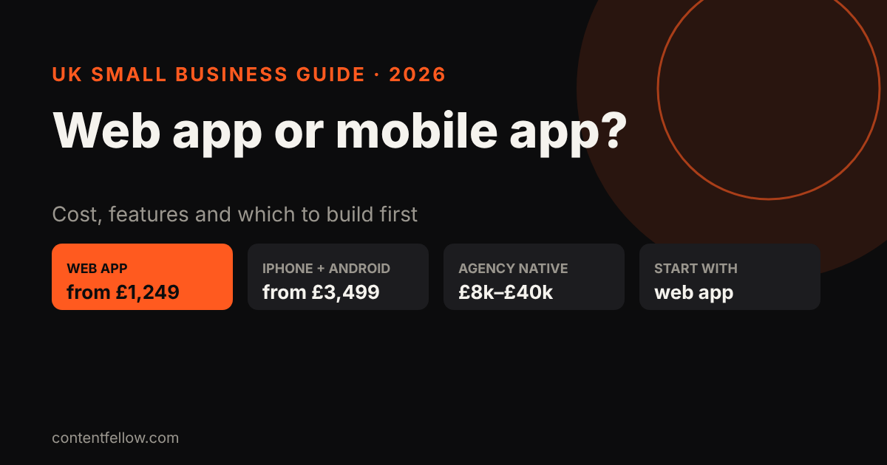
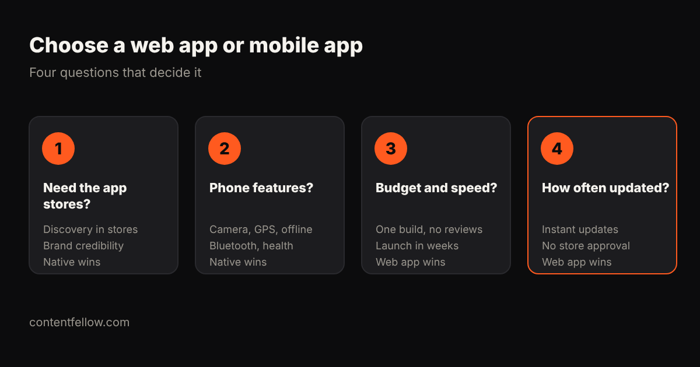

Web App vs Mobile App: Which Should a UK Small Business Build?
Quick answer: Most UK small businesses should start with a web app (also called a PWA): it works on every phone from the browser, customers can add it to their home screen, and it costs far less. With ContentFellow it starts at £1,249, against £8,000 to £40,000 for a typical agency-built native app. Build a native iPhone and Android app when you need the app stores, heavy phone features or offline use. (October 2026.)

What's the difference?
- Web app (PWA): a website that behaves like an app. Customers open it in the browser and can add it to their home screen. One build works on iPhone, Android and desktop.
- Native mobile app: built for iPhone and Android and downloaded from the App Store or Google Play. It can use more phone features and appears in store searches.
Web app vs mobile app compared
| Web app (PWA) | Native mobile app | |
|---|---|---|
| Typical UK cost | from about £1,249 | £3,499 (simple, fixed price) to £8,000–£40,000+ (agency) |
| Works on | Every device with a browser | iPhone and Android (built for each, or cross-platform) |
| App store listing | No | Yes |
| Updates | Instant, no store approval | Store review for each release |
| Phone features | Camera, location, notifications (most) | Full access, including Bluetooth, health data, background tasks |
| Offline use | Limited | Strong |
| Store fees | None | Apple £79/year, Google $25 one-off |

When should you build a web app?
- Booking, ordering, loyalty cards, client portals and internal tools.
- You want to launch in weeks and update often.
- Your budget is under about £5,000.
When should you build a native app?
- Customers expect to find you in the App Store.
- You need offline use, Bluetooth, health data or heavy background features.
- You plan frequent daily use, where an app icon and push notifications pay off.
Can you start with a web app and move to native later?
Yes, and it's often the smartest route. A web app proves people use it; you then build a native app around the features they actually use.
ContentFellow app prices
- App Starter (web app): £1,249, up to 5 screens, login and forms
- App Pro (iPhone and Android): £3,499, up to 10 screens, published to both stores
- App Custom: from £6,499, with backend, payments, admin and notifications
See development packages · keep it running with App Care from £149 a month · full guide: app development cost UK.
Frequently asked questions
Is a web app cheaper than a mobile app?
Usually yes, because one build works on every device and there are no store reviews or fees. Web apps start from around £1,249; native apps from £3,499 at fixed price or £8,000 or more at agencies.
Can a web app send push notifications?
Yes, on Android and on iPhone when the web app is added to the home screen. Native apps still offer more control.
Do web apps work offline?
Partly. They can cache some content, but native apps handle offline use much better.
Will my web app appear in the App Store?
No. Web apps are found through your website and Google. Choose a native app if store listings matter.
Which is better for a small business?
For most small businesses, a web app first. Move to native once customers are using it regularly and need native features.
Sources: Foresight Mobile and Fulminous UK app pricing; Apple Developer Program UK; Google Play Console (reviewed October 2026). Last updated 17 October 2026.